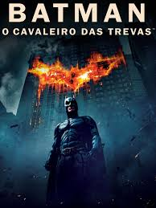

Batman-O cavaleiro das trevas
Sinopse:
Batman tem conseguido manter a ordem em Gotham com a ajuda de Jim Gordon e Harvey Dent. No entanto, um jovem e anárquico criminoso, conhecido apenas como Coringa, pretende testar o Cavaleiro das Trevas e mergulhar a cidade em um verdadeiro caos.

Home
Vingadores-Ultimato
Rambo-Last blood